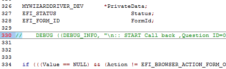
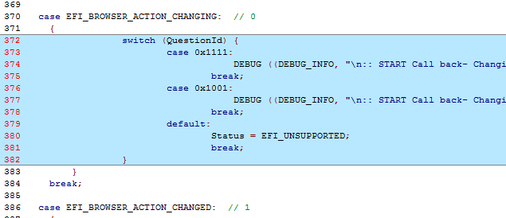
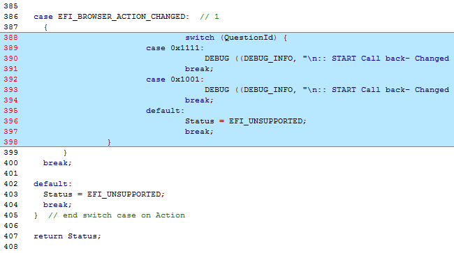
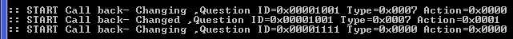
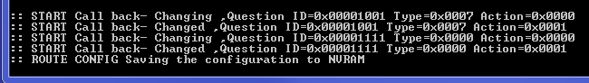

Lab 9. Add code to your driver when Call Back events occur for Interactive Items
In this lab, you’ll update your driver to print debug statements when the HII browser engine calls back into your call back function. Every time the browser does anything with the interactive labeled fields there is a call made to your driver’s call back function. We can determine the item by the quetionid and what action based on the action passed to your call back function. Your call back function can then add code to special case when these transitions occur.
For this lab we will simply add Debug print statements. However, the use of adding call backs to a driver’s HII functions adds the capability of providing more manageability and flexibility for the interactions between the user, the browser engine, and your driver code. In a real driver firmware situation, it may be desired to implement more complex features and functionality based upon an item changing.
- Update the HiiConfigAccess.c file
- Comment out the DEBUG statement with “
//” in theMyWizardDriverHiiConfigAccessCallbackcall back function approx. line 330:
//
 - Add a switch case statement of the question ID’s to the “Action” switch case of
EFI_BROWSER_ACTION_CHANGINGin the call back function by adding a nested switch case code (as shown below at approx. line 372 )
switch (QuestionId) { case 0x1111: DEBUG ((DEBUG_INFO, "\n:: START Call back- Changing ,Question ID=0x%08x Type=0x%04x Action=0x%04x", QuestionId, Type, Action)); break; case 0x1001: DEBUG ((DEBUG_INFO, "\n:: START Call back- Changing ,Question ID=0x%08x Type=0x%04x Action=0x%04x", QuestionId, Type, Action)); break; default: Status = EFI_UNSUPPORTED; break; } - Add another nested switch case statement of the question ID’s to the “Action” switch case of EFI_BROWSER_ACTION_CHANGED in the call back function (as show below at approx. line 388):
switch (QuestionId) {
case 0x1111:
DEBUG ((DEBUG_INFO, "\n:: START Call back- Changed ,Question ID=0x%08x Type=0x%04x Action=0x%04x", QuestionId, Type, Action));
break;
case 0x1001:
DEBUG ((DEBUG_INFO, "\n:: START Call back- Changed ,Question ID=0x%08x Type=0x%04x Action=0x%04x", QuestionId, Type, Action));
break;
default:
Status = EFI_UNSUPPORTED;
break;
}

- Save MyWizardDriver.c
Build and test MyWizardDriver
- Open the Visual Studio Command Prompt
- Type build
- Type build run
- At the UEFI Shell prompt,type exit
- Now at the setup front page menu, select “Device Manager”
- Inside the Device Manager menu press the down arrow to “My Wizard Driver Sample Formset” Press "Enter"
- Observe the Visual Studio Command Prompt – build run Window
Test: changing the “Name of Configuration” and the “Enter ZY Base(Hex)” fields while observing the Visual Studio Command Prompt – build run Window - Switch back to Visual Studio and notice the changes that you made. Notice: when changing the “Name of Configuration” field  Notice: when changing the “Enter ZY Base(Hex)” field  Notice: when Pressing “F10”
- Press “Escape” and another "Escape" to exit the “Device Manager”
- Select “Continue” and then Press "Enter”
- Type “reset” at the Shell prompt and then Press “Enter” to return to the Visual Studio Command Prompt
For any build issues copy the solution files from C:\Fw\LabSolutions\LessonE.9
NOTE: Del Directory C:\fw\edk2\Build\NT32IA32\DEBUG_VS2010x86\IA32\MyWizardDriver before the Build command to build the MyWizardDriver Clean.